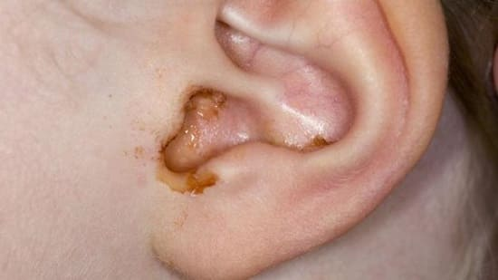

Ушная сера образуется железами, расположенными в коже наружного слухового прохода. Сера образует защитное покрытие, предохраняющее кожу от микробов и повреждений. Это часть механизма самоочищения наружного слухового прохода, который работает, постепенно вынося наружу микробов, пыль и другие загрязняющие частицы. Но у некоторых детей образуется слишком много серы, что может забить наружный слуховой проход и ухудшить слух. Иногда серы образуется так много, что ее можно видеть снаружи вокруг слухового прохода.
ЧТО ДЕЛАТЬ
Если сера не доставляет неприятностей и не мешает слуху, оставьте ее в покое. Если она раздражает или нарушает слух, ее можно безопасно удалить следующими способами:
• Используйте безрецептурный раствор, растворяющий серу и содержащий перекись водорода. Уложите ребенка ухом вверх и влейте 4 капли раствора в наружный слуховой проход. Ребенок должен полежать 10 минут. Это должно размягчить серу настолько, что ее можно будет вымыть теплой водой из спринцовки или шланга.
• Если дискомфорт сохраняется, врач может удалить серу специальным инструментом. Непосредственно перед визитом закапайте в ухо ребенку раствор, размягчающий серу, — это облегчит работу врача и сделает процедуру более комфортной для ребенка.
Никогда не пытайтесь ввести что-либо в наружный слуховой проход, чтобы удалить серу. Вы можете повредить барабанную перепонку или кожу прохода. Удалять избыток ушной серы из слухового прохода должен врач. |
Здоровье ребенка от докторов Сирс / Сирс У. и др.